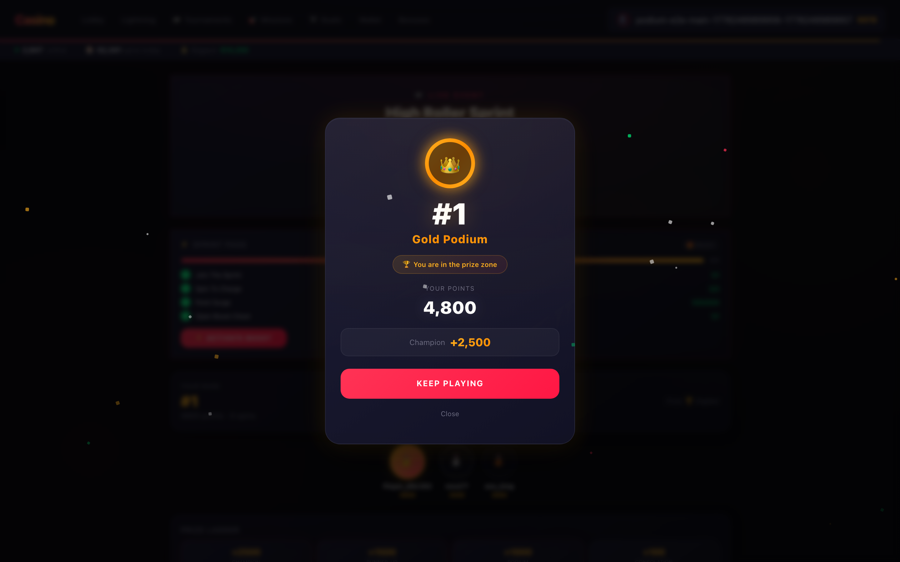
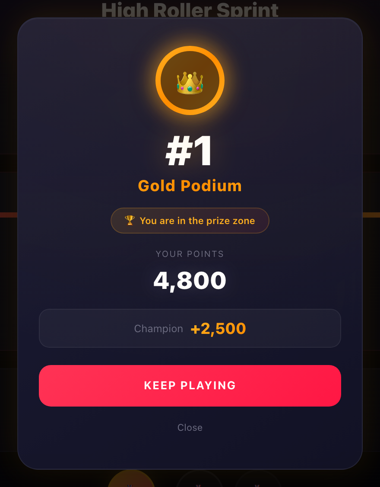
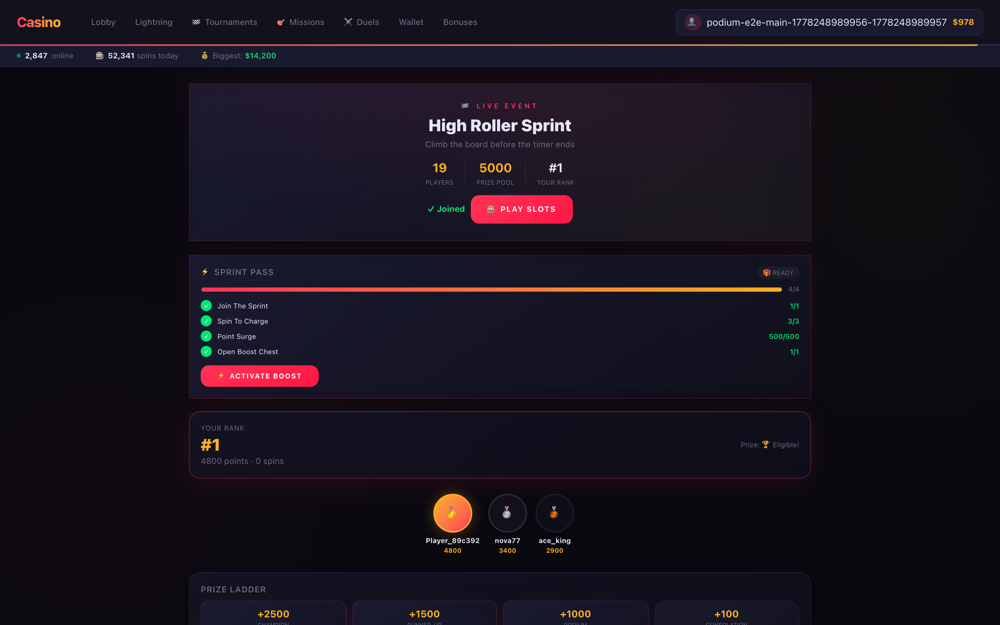
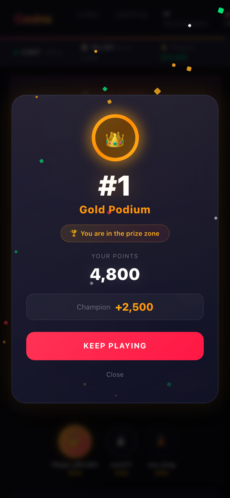

Feature demo · tournament-podium-moment

Участник в топ-3 до появления модалки. Виден турнирный хаб с лидербордом, ранги, очки и управление бустами. Страница готова к отображению Podium Moment.
Модальное окно Podium Moment отображается с золотым градиентным медальоном, рангом #1, меткой "Gold Podium", бейджем призовой зоны, очками и кнопкой Keep Playing. Конфетти анимировано.

Детальный вид модалки: корона 👑, ранг #1, текст "Gold Podium" с градиентной заливкой, бейдж "You are in the prize zone", очки (8,748), приз +2500. Стеклянный фон с backdrop-filter blur.

Модалка закрыта, пользователь остаётся на странице турнира. data-podium-moment="dismissed". Podium не появляется повторно для того же ранга — sessionStorage блокирует повторный показ.

Мобильный вид (390×844). Модалка центрирована, читаема, с корректными отступами. Все данные отображаются: ранг, медаль, очки, CTA. Адаптивная вёрстка через max-width: 90vw.
4 source files missing from bundle, ATM audit technical_partial, CORS console error, evidence incomplete.
Bundle generator fixed (backtick strip, profile path, duplicate masking). ATM audit re-run → 12/12 passed. CORS documented in known-limitations.md.
Bundle complete but evidence files not visible. Reviewer-outputs not included in bundle scope.
All reviewer artifacts (verdicts, fix-responses, vision reviews) now included in bundle. 24/24 files present.
All previous rejection reasons resolved. Bundle complete, audit passes, no new blocking issues.
📄 summary.md — что сделано
📄 changed-files.md — 3 new, 1 modified
📊 e2e-report.json — rank 19→1, podium ✅, dismissal ✅
🧠 reviewer-verdict.md — DeepSeek: approve_technical_done
🔍 codex-reviewer-verdict-3.md — Codex re-review: approve_technical_done
📸 vision-review.md — DeepSeek: skipped (text-only)
👁️ codex-vision-review.md — Codex: 5/5 screenshots analyzed
🔧 reviewer-fix-response.md + codex-reviewer-fix-response.md
🏷️ atm-export.json — 12 gates, all passed
📋 atm-audit.txt — demo_done, PASS ✅
Review #1: REJECT — bundle incomplete, audit technical_partial, CORS error
Review #2: REJECT — evidence not in bundle, process issue
Review #3: APPROVE — all resolved, 0 blocking findings
ATM complete-review: review_passed → DONE ✅